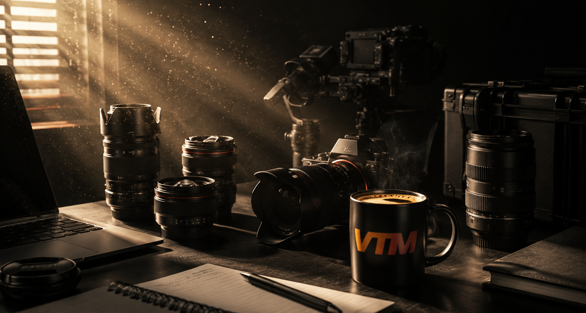
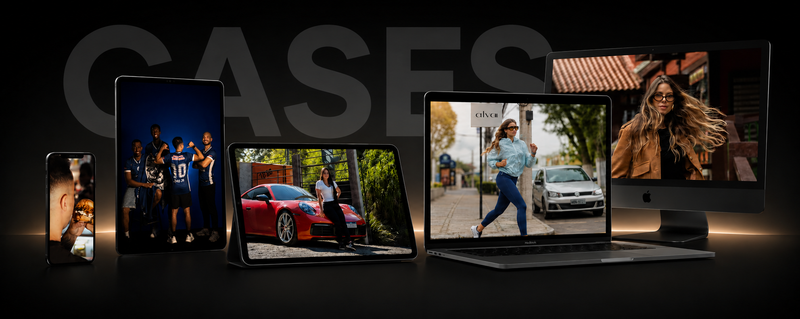
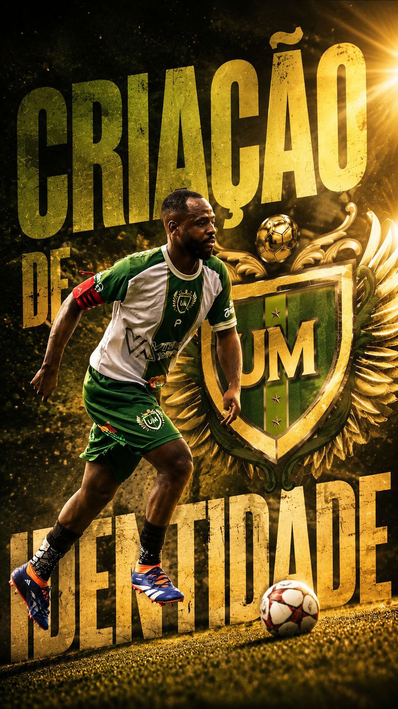
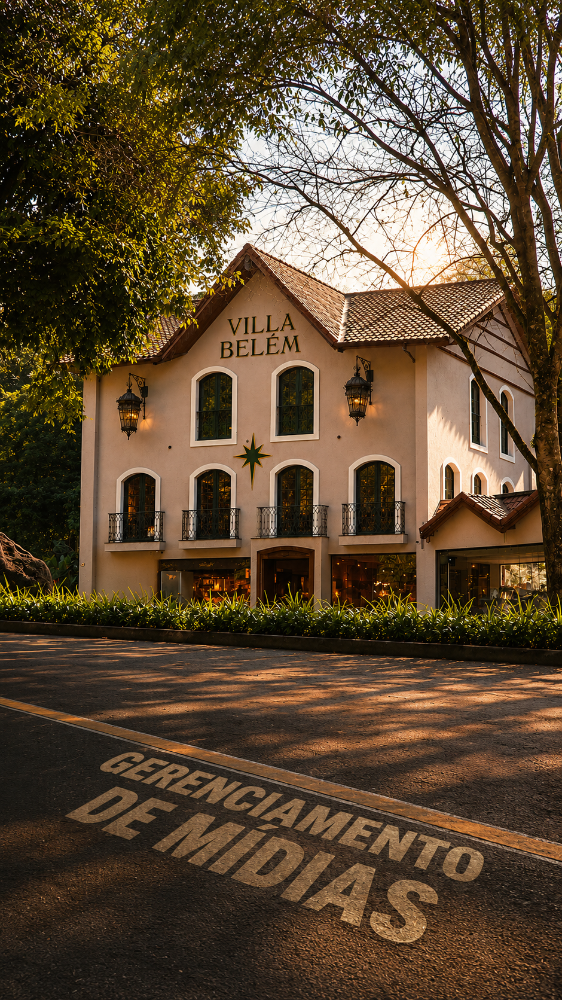
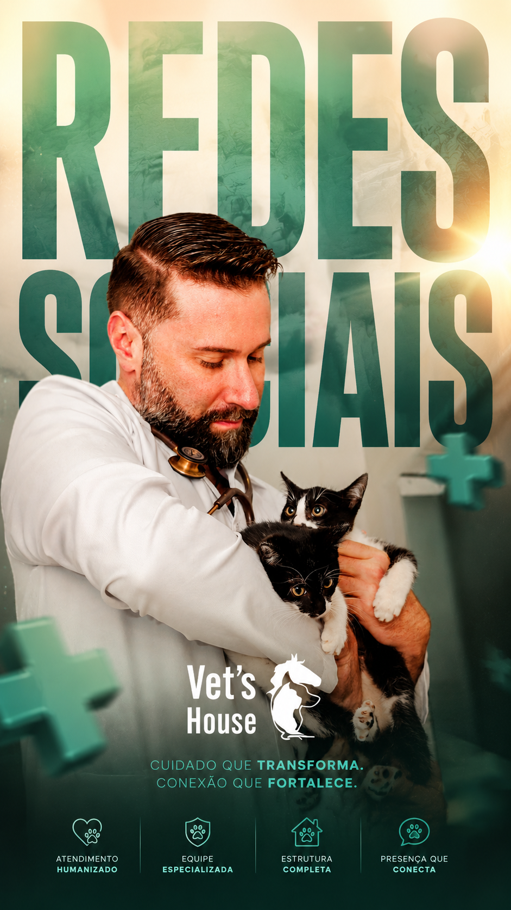
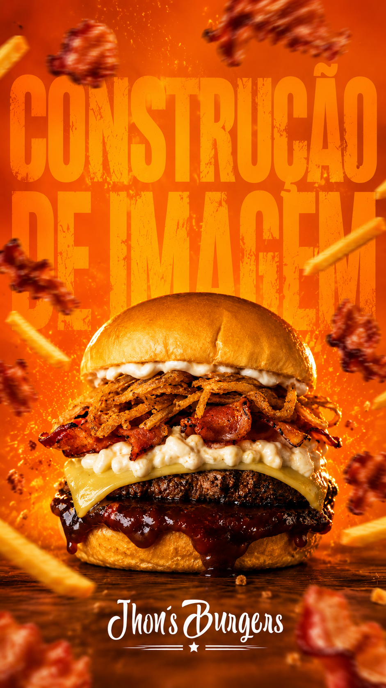
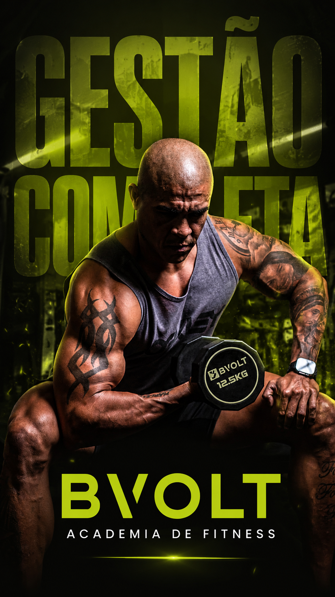
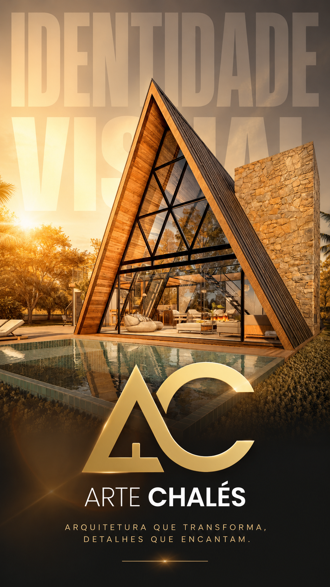
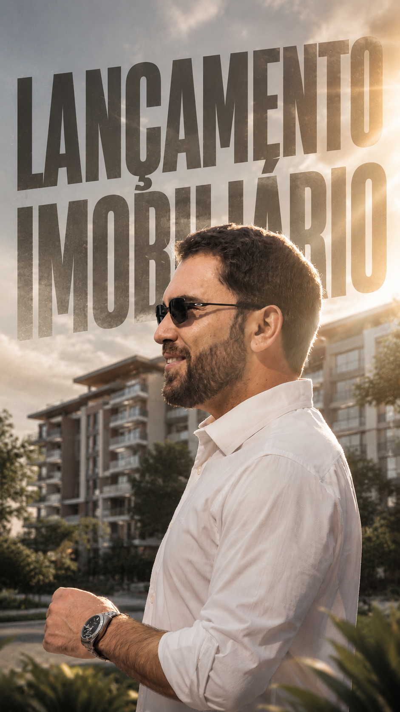
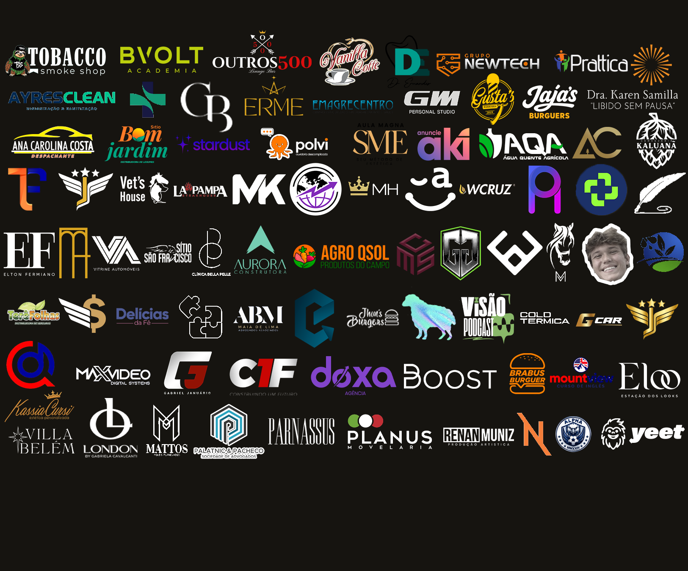

Produção audiovisual
Captação comercial, cobertura de eventos, materiais promocionais e linguagem cinematográfica.

Marketing, cinema e identidade visual
Agência de marketing e produtora audiovisual fundada em 2019, em Teresópolis. Criamos marcas, campanhas e filmes comerciais com estética de alto impacto, estratégia clara e acabamento premium.
Visão geral
A VTM Mídia atua no eixo Teresópolis e Guapimirim criando identidades visuais, estratégias comerciais e produções cinematográficas para negócios locais e marcas de nicho.
A operação nasce da Várzea e combina direção criativa, olhar comercial e domínio técnico em captação, cor, edição e renderização de alta qualidade.
Principais serviços
Captação comercial, cobertura de eventos, materiais promocionais e linguagem cinematográfica.
Logotipos, mockups, posicionamento e sistemas visuais consistentes para marcas memoráveis.
Planejamento de conteúdo, criação de posts, calendário editorial e presença digital consistente para marcas que precisam aparecer todos os dias.
Planos de investimento, gestão de mídia paga e projeções para escalar negócios.
Nichos de atuação
Saúde, esportes e bem-estar
Gastronomia e bebidas premium
Serviços corporativos

Trabalhos recentes







Padrão de produção
Design limpo, preto fosco e gradiente vermelho-laranja com presença forte.
Sony FX30, Sony A6600, drones de alta precisão e domínio de S-Log.
Linguagem fotorrealista, ultrarrealista e preparada para 4K e 8K.
Campanhas planejadas para gerar presença, desejo, leads e receita.
Clientes

Identidade forte, captação cinematográfica e estratégia comercial para marcas que querem dominar a própria presença digital.
VTM Mídia, Teresópolis - Rio de Janeiro
Vamos conversar